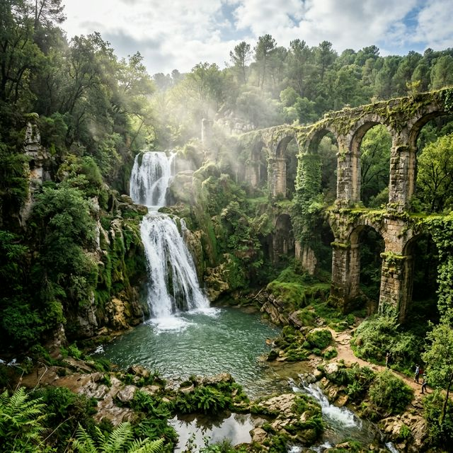
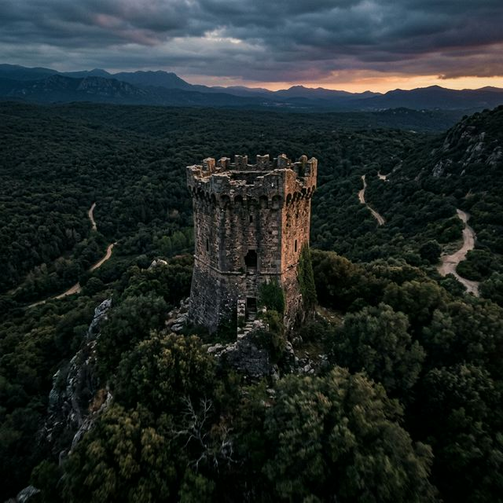
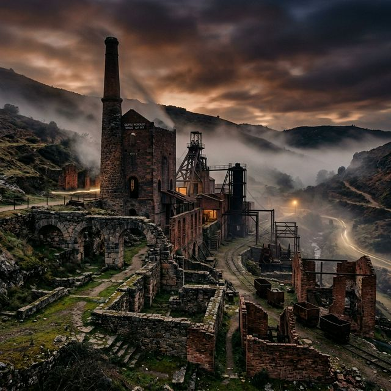

// 05_VISUALIZACIÓN
Galería de Hallazgos

B-POOL // 01
Ruinas Hidráulicas - Popea
M-CORE // 04
Complex Tecnológico Muriano
W-TOWER // 07
Atalaya Septagonal

L-CAPE // 00
COORDENADAS 37.9074 N, -4.8545 W
Análisis exhaustivo del patrimonio minero, militar e hidráulico de la Sierra de Córdoba. Un viaje al pulmón logístico de las metrópolis más importantes del mundo antiguo.
// 00_CONTEXTO
El territorio que comprende la Sierra de Córdoba constituye uno de los paisajes culturales más complejos de la Península Ibérica. Esta serranía ha funcionado históricamente como el motor logístico, hídrico y minero de una metrópolis que dominó el mundo.
"Los vestigios que hoy se dispersan entre su densa vegetación narran una historia de innovación técnica y control territorial de más de cuatro milenios."
// 01_DEFENSA

Ubicada en una posición privilegiada de origen islámico (c. 858), su planta heptagonal irregular permitía una visión panorámica excepcional. Punto crítico para la vigilancia del monasterio de Peña Melaria y el control de zonas mineras activas.
PLANTA
Heptagonal Irregular
ÉPOCA
Califal (858)
A 1.24 km se alza esta atalaya de planta cuadrada, vestigio de la evolución funcional del patrimonio serrano: del control militar al retiro espiritual de los eremitas.
// 02_EXTRACCIÓN
Cerro Muriano es un palimpsesto tecnológico. Desde pozos romanos que descendían 200 metros hasta la industrialización británica de la Córdoba Copper Company Ltd.
MAX PROFUNDIDAD
470M (Pozo San Rafael)
MINERAL
Cu (Calcopirita)

La ingeniería romana alcanzó cotas sorprendentes con sistemas de drenaje y ventilación sistémicos en el complejo de Siete Cuevas.
// 03_HIDRÁULICA
Una obra faraónica de 18 km que suministraba hasta 35,000 m³ diarios a la ciudad. Sistemas mixtos de specus y sifones inversos para salvar el desnivel de la sierra.
Complejo sistema de captación y procesamiento hídrico. El Molino del Martinete aprovechaba la fuerza del agua para la molienda e industria batanera.
Rehabilitado en la época califal para abastecer a la ciudad palatina de Medina Azahara mediante pozos de resalto y conducciones abovedadas.
// 04_CONECTIVIDAD
Sillería excepcional a soga y tizón del s. X. Formaba parte de la Vereda del Pretorio y del sistema de comunicaciones militares del califato.
Ubicado cerca de la desembocadura del Guadanuño, evidencia la antigüedad de la ruta hacia las minas de Villaviciosa.
Un palimpsesto de pilas que emergen del lecho rocoso: desde puentes derruidos de Primo de Rivera hasta el paso moderno de 1950.
// 05_VISUALIZACIÓN

B-POOL // 01
M-CORE // 04
W-TOWER // 07
L-CAPE // 00
// 05_MATERIA
El corazón pétreo de Medina Azahara. Extracción masiva de calcarenita del Mioceno (6,000 sillares diarios) transportada por el Camino de los Nogales.
Paradigma de la residencia rural aristocrática. Lujo califal manifestado en la "Pila de Alamiriya", decorada con felinos y acanto en mármol blanco.
IDENTIDAD ESTRATIGRÁFICA
Piedra amarillenta marina, rica en fósiles, motor de la Dar al-Yund.